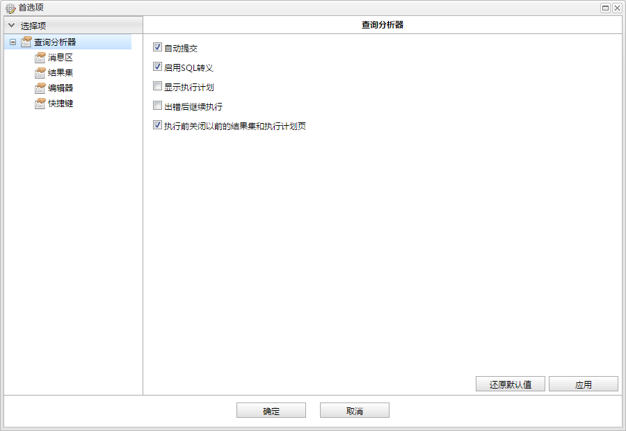
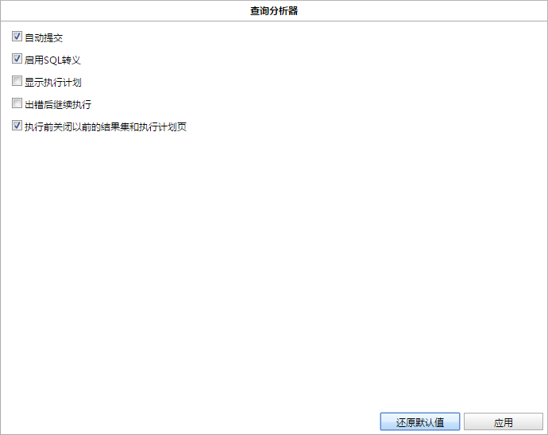
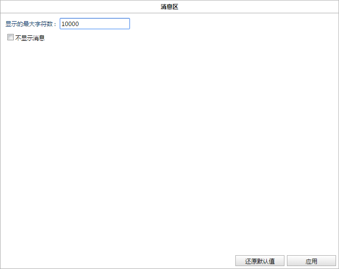
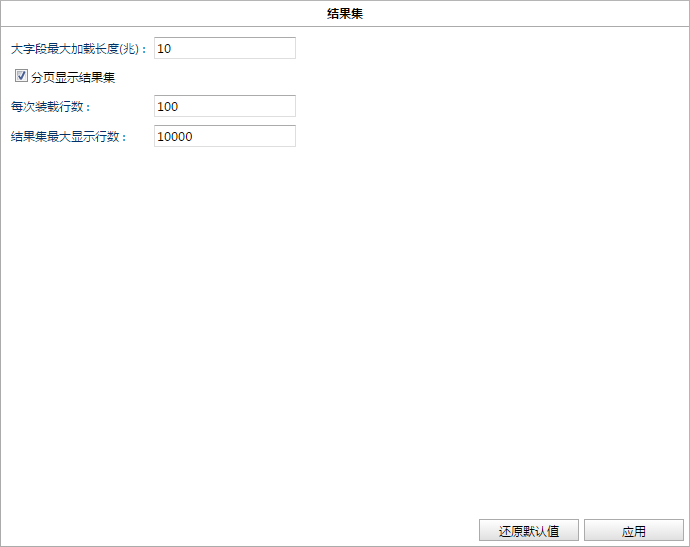
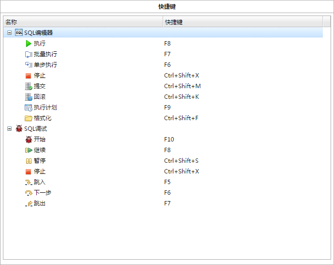

DEM数据库连接的首选项对话框。

首选项对话框目前只支持查询分析器，主要包括以下几部分。如下图所示:
查询分析器的首选项，如下图所示:

自动提交
SQL执行器自动提交，默认勾选。
启用SQL转义
执行查询时，启动SQL转义，默认勾选。
显示执行计划
执行查询时，不只显示消息和结果集，同时显示执行计划，默认不勾选。
出错后继续执行
执行查询时，出错后继续执行，默认不勾选。
执行前关闭以前的结果集和执行计划页
执行新查询时，关闭之前查询结果，默认勾选。
还原默认值
点击还原已修改的选项。
应用
保存当前页修改项。
消息区(查询分析器)的首选项，如下图所示:

显示的最大字符数
消息区显示的最大字符，默认10000。
不显示消息
执行查询时不显示消息，默认不勾选。
还原默认值
点击还原已修改的选项。
应用
保存当前页修改项。
结果集(查询分析器)的首选项，如下图所示:

大字段最大加载长度(兆)
结果集大字段最大加载长度，默认10。
分页显示结果集
分页显示结果集，默认勾选。
每次装载行数
结果集每次装载行数，默认100。
结果集最大显示行数
结果集最大显示行数，默认10000。
还原默认值
点击还原已修改的选项。
应用
保存当前页修改项。
编辑器(查询分析器)的首选项，如下图所示:
显示行号
编辑器中显示行号，默认勾选。
高亮显示当前行
编辑器中高亮显示当前行，默认勾选。
还原默认值
点击还原已修改的选项。
应用
保存当前页修改项。
快捷键(查询分析器)，包括SQL编辑器和SQL调试的快捷键，如下图所示:
